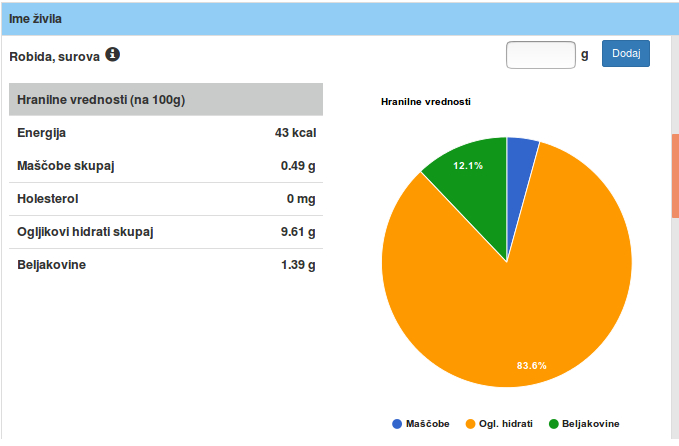

Portal e-Zdravje je spletna aplikacija zasnovana za vse vrste naprav. Sestavljena je iz več komponent.
Te so:
CILJNA PUBLIKA
Aplikacija je namenjena pacientom, kot tudi navadnim uporabnikom, ki želijo biti bolje osveščeni o svojem zdravju, in poleg tega uporabljati tudi nekatere pripomočke, ki bi lahko potencialno pomagali pri izboljšanju njihovega zdravstvenega stanja.
UPORABA
Aplikacija je tesno povezana z podatki iz EHR-ja, zato je priporočeno, da se pred uporabo najprej prijavite. Večina zgoraj naštetih funkcionalnosti je namreč od njih tesno odvisna. Po prijavi se bodo iz EhrScapove podatkovne baze prenesli vsi potrebni podatki.
Funkcionalnost za izpis EHR-ja bo poskrbela za vizualizacijo uporabnikovih zdravstvenih podatkov.
Na podlagi zadnjih podatkov bo avtomatsko izračunan indeks telesne mase in uvrščen v ustrezno kategorijo.
Podobno velja tudi za zadnjo funkcionalnost, ki na podlagi zadnjih podatkov o telesni masi in višini izračuna priporočen dnevni vnos kalorij (Mifflinova enačba).
Kot zunanji vir mi je služila sledeča spletna stran http://www.cenim.se/zivila.php. Nanji sem pridobil okoli 650 živil + pripadajočih podatkov o deležu posamezne hranilne snovi. Ta zunanji vir je bil ključen za uspešno implementacijo funkcionalnosti, katera omogoča sestavo seznama živil, iz katerih bodo narejeni posamezni obroki.
Spletna stran ne ponuja nobenih API-jev, zato sem moral za pridobitev podatkov sprogramirati svoj HTMLParser. Napisal sem ga v jeziku Java. Kodo si lahko ogledate tukaj.
Deluje pa na sledeči način. V tabelo sem zapisal url-je za vsako kategorijo živil (npr. Mleko in mlečni izdelki,...). Vzpostavljal sem povezave preko GET zahtevka (na port 80) in tako pridobival HTML String-e. Te sem z dodatnimi funkcijami razbil in iz njih izvlekel uporabne podatke. Za vsak izdelek je bil potreben še en GET zahtevek, saj so se podatki o hranilnih vrednosti nahajali na ločenih url naslovih. Naposled sem podatke, ki sem jih zbiral v 2D tabeli zapisal še na disk.
Na spodnji zaslonski sliki je prikazan master/detail načrtovalski vzorec, ki sem ga uporabil pri implementaciji zadnje funkcionalnosti, in je namenjen podrobnejšemu prikazu podatkov o hranilnih vrednostih posameznega živila.
Pri vizualizaciji podatkov sem uporabljal "Google Charts". Bolj natančno uporabil sem dva tipa grafov "Pie Chart" in "Area Chart". Prvega sem uporabil pri master-detail načrtovalskem vzorcu drugega pa pri vizualizaciji podatkov iz EHR-ja. Za "Google Charts" sem se odločil zaradi samega izgleda. Poleg tega z njimi ni nobenega problema ohranjati prilagodljivost spletne strani glede na velikost ekrana.